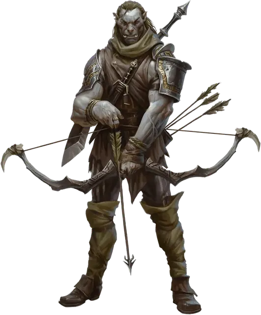

Зираж-охотник
Ziraj the Hunter
Средний Гуманоид (Полуорк), нейтрально-злой, именной НИП

Класс Доспеха 17 (кожаный доспех +2)
Хиты 153 (18к8 + 72)
Скорость 30 футов
| мод | спас | ||
|---|---|---|---|
| СИЛ | 18 | +4 | +4 |
| ЛОВ | 18 | +4 | +4 |
| ТЕЛ | 18 | +4 | +4 |
| мод | спас | ||
|---|---|---|---|
| ИНТ | 11 | +0 | +0 |
| МДР | 14 | +2 | +5 |
| ХАР | 15 | +2 | +5 |
Навыки Атлетика +7, Выживание +5, Запугивание +5, Скрытность +7
Чувства тёмное зрение 60 футов, пассивное Восприятие 12
Языки Общий, Орочий
Опасность 8 (3900 опыта)
Бонус мастерства +3
Особенности
Использование заклинаний. . Зираж является заклинателем 10-го уровня. Его базовой характеристикой является Харизма (Сл спасброска от заклинания 13, +5 к попаданию атаками заклинаниями). У него подготовлены следующие заклинания паладина:
• 1 уровень (4 ячейки): приказ, защита от зла и добра, громовая кара.
• 2 уровень (3 ячейки): клеймящая кара, поиск скакуна.
• 3 уровень (2 ячейки): ослепляющая кара, рассеивание магии.
Действия
Мультиатака. Зираж совершает три атаки глефой или большим длинным луком.
Глефа. . Рукопашная атака оружием: +7 к попаданию, досягаемость 5 футов, одна цель. Попадание: Рубящий урон 9 (1к10 + 4).
Большой длинный лук. Дальнобойная атака оружием: +7 к попаданию, дистанция 150/600 футов, одна цель. Попадание: Колющий урон 11 (2к6 + 4).
Ужасный аспект (Перезаряжается после короткого или длинного отдыха). . Зираж распространяет вокруг себя магическую угрозу. Все противники в радиусе 30 футов должны пройти проверку по Мудрости Сл 13. При провале спасброска, цели получает статус испуганный на 1 минуту. Если испуганная цель оканчивает свой ход за пределом радиуса в 30 футов от Зиража, то она может повторить спасбросок и окончить эффект в случае успеха.
Описание
Зираж — полуорк-охотник, владеющий огромным луком, из которого он стреляет такими же крупными стрелами.
Он мастер убийств в Чёрной Сети. Если Зираж отправляется кого-то убивать, то по просьбе друзей — Давила, Истрид, Скимо или Ташлин. Персонажи могут стать мишенью Зиража, а может выйти и так, что Зираж поможет им убрать общего врага. Он силён и немногословен.
Городской страже давно докладывали о силуэте, мелькающем то тут, то там на крышах Вотердипа, — об огромной тени, которая следит с высоты, сеет смерть в виде длинных чёрных стрел и исчезает без единого звука. Откуда он и есть ли у него дом — загадка, и никто не знает, где он появится в следующий раз.
Разбойниками Рока прозвали себя пятеро беспринципных искателей приключений, обожавших грабить логова личей (которые многие называют «роковыми»).
Три года назад они прекратили поиски приключений, вступили в Чёрную Сеть и приехали в Глубоководье, планируя устроить тут ячейку Жентарим. За это время они заключили союзы с разными аристократами и гильдиями, а с другими поссорились, в то же время пытаясь отбиться от лазутчиков Арфистов.
Сокровища. Зираж носит +2 кожаный доспех и огромный длинный лук. Это уникальное оружие может использовать только существо размером не менее среднего и с Силой не менее 18. Лук стреляет огромными стре лами, которые наносят колющий урон, равный 2к6 + модификатор Силы стрелка. Дистанция у него такая же, как у обычного длинного лука.